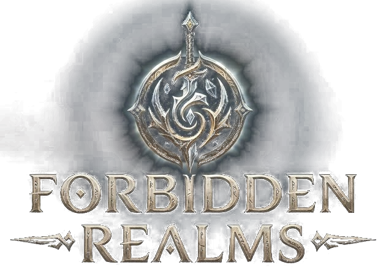
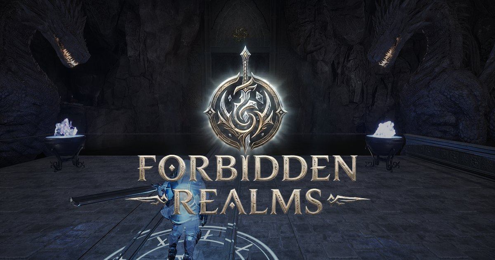
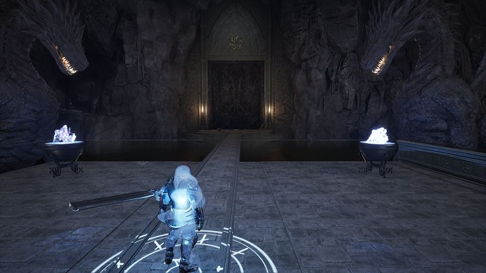
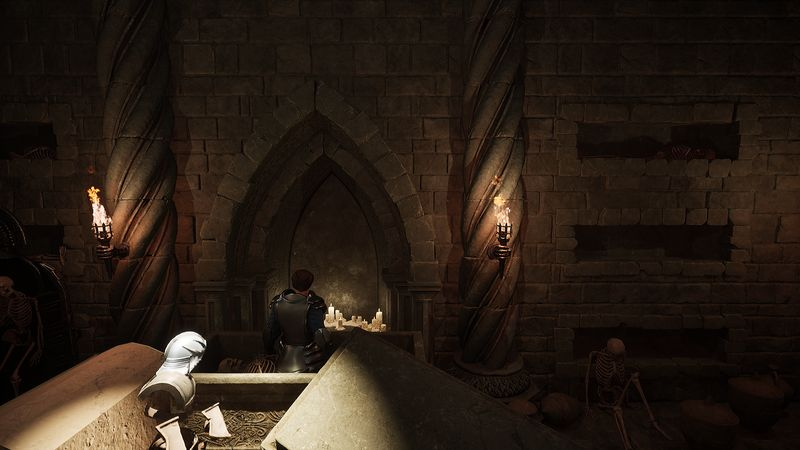
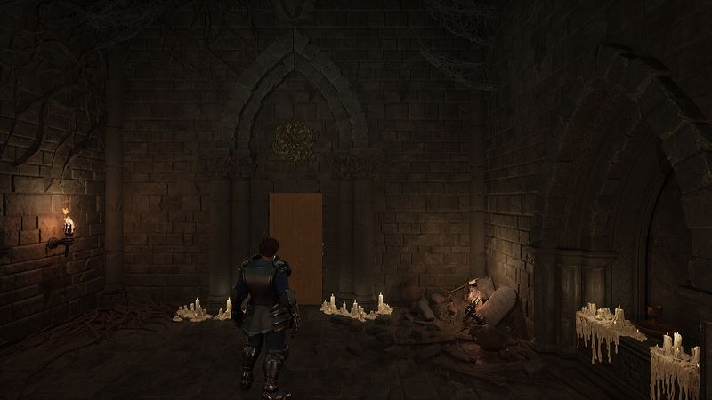
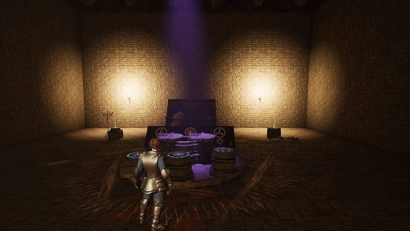
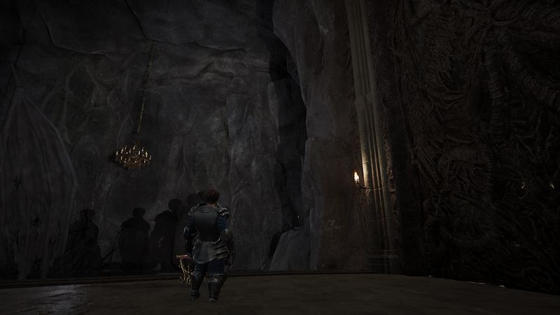
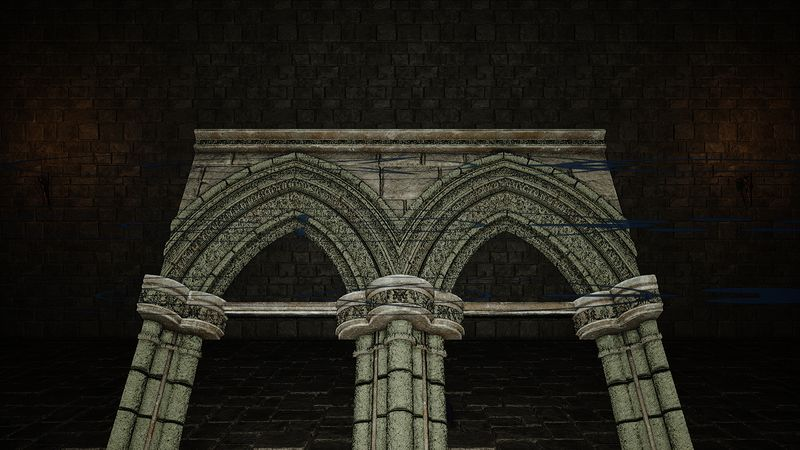
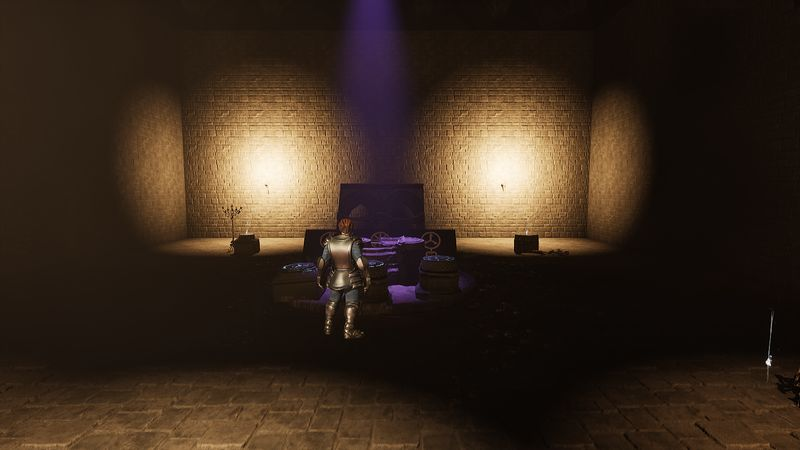

Press kit
Everything here may be used freely in coverage of the game. Screenshots are from a pre-alpha build and do not represent final quality.
Fact sheet
- Title
- Forbidden Realms
- Genre
- Third-person souls-like action RPG
- Platform
- PC (Windows, macOS)
- Players
- Single player
- Engine
- Unreal Engine 5
- Status
- Pre-alpha, in development
- Release
- To be announced
- Contact
- press@forbidden-realms.com
Short description
Forbidden Realms is a third-person souls-like action RPG. The seals that held an ancient corruption are failing, the realm is unraveling from the east, and the only Guardian left to stop it is the one who ran. Fight fallen heroes, relight the Watchfires, and recover the truth one fragment at a time across seven connected regions.
Long description
Something is wrong with the realm. Creatures go feral without cause, crops rot overnight, and far to the east the sky has turned a deep, wrong purple that creeps closer every season. People call it the Unraveling. The old prayers name the thing behind it the Veilborn, a formless hunger that moves through corruption and possession and prefers to wear the bodies of those who were once good.
You arrive in the town of Hearthholm from across the Sea of Glass: a stranger with a Guardian's bearing and nothing to say about where you came from. Hearthholm becomes your base, a full town whose people react to what you do and what you leave undone. From its gate the road runs east through seven physically connected regions, from a corrupted forest and mountain fortresses to a sunken seal site, a blighted wasteland, and finally the place where reality itself is coming apart.
Combat is real-time and precise: tight parry windows, a free dodge roll with true invulnerability frames, and a poise system that decides who staggers. Four launch classes, the Sentinel, Hexblade, Ironsworn, and Sage, share the same starting budget spent in different shapes. Guardian Watchfires serve as rest points, waypoints, and the place to spend hard-won Embers, which drop where you die and are lost if you die again before reclaiming them.
The story is not told; it is recovered. Fallen Guardians stand in your way as bosses, each recognizing you, each carrying a piece of what happened. Solve it early and you may find you were wrong about which sin it was.
Logos and key art

{kind=link}
{kind=link}

{kind=link}
Screenshots
All 1920×1080 JPG.

{kind=link}

{kind=link}

{kind=link}

{kind=link}

{kind=link}

{kind=link}

{kind=link}